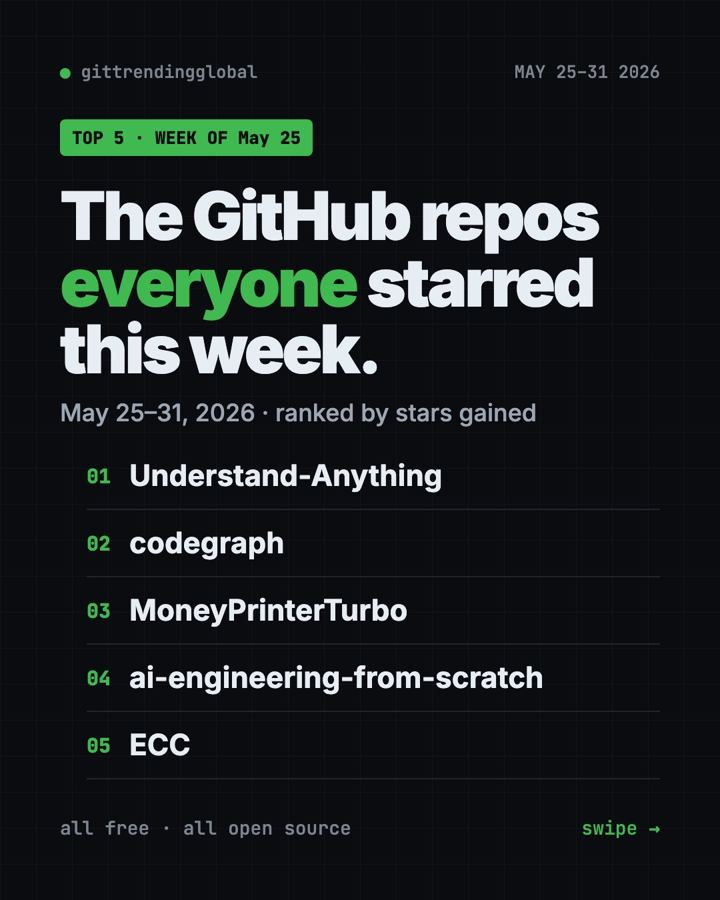
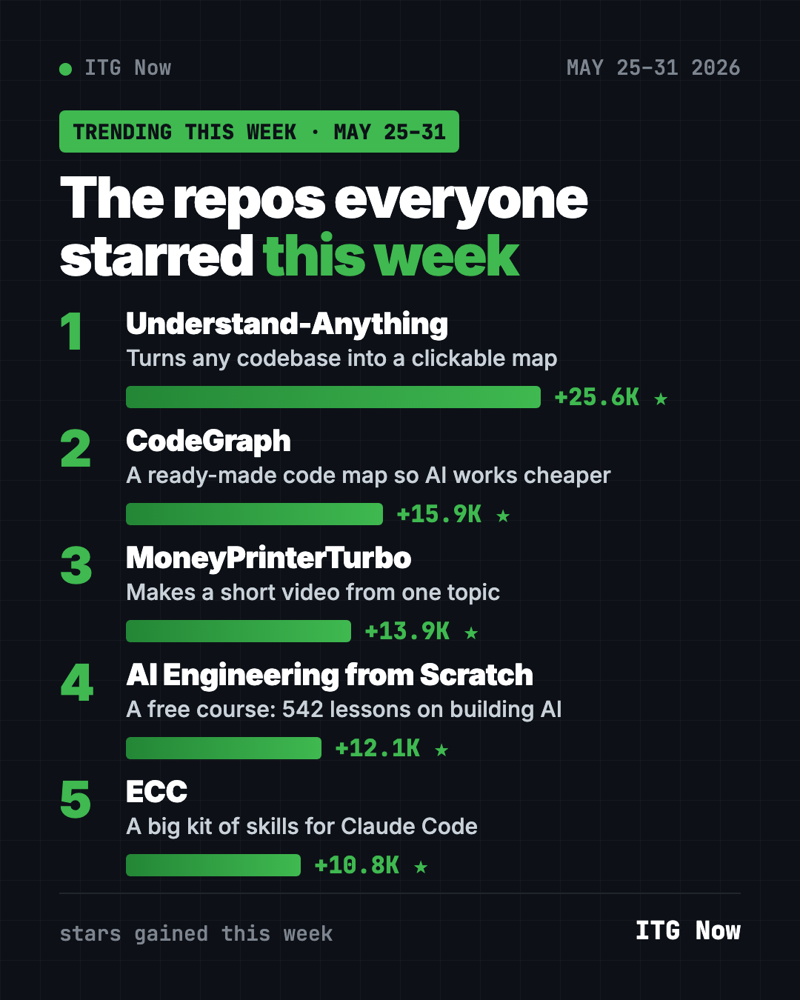
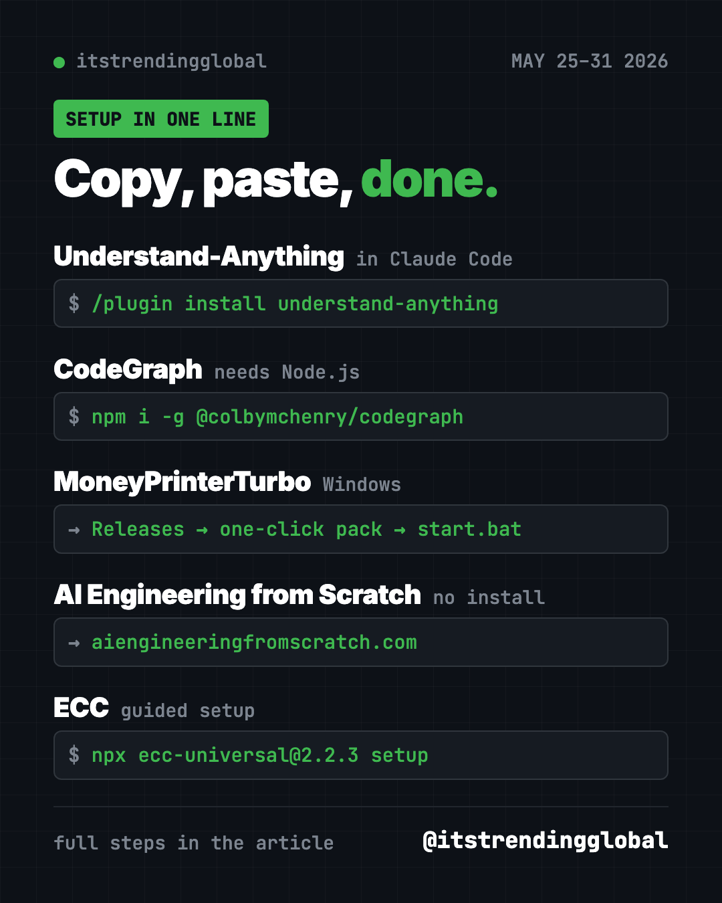

Trending GitHub Repos This Week: May 25-31, 2026
The trending GitHub repos the week of May 25, 2026: a code map, a cheaper AI helper, a topic-to-video maker, a free AI course and a Claude Code kit.

The trending GitHub repos the week of May 25, 2026 were Understand-Anything, CodeGraph, MoneyPrinterTurbo, AI Engineering from Scratch and ECC. All five are free and open source, and the top one gained 25,600 stars in seven days.
A GitHub star works like a bookmark, so a big jump means a project solves a real problem. This week the theme was clear: people want AI helpers that understand their projects faster and cost less to run.
Key takeaways
- Understand-Anything led the week with +25.6K stars. It turns a pile of code into a map you can click.
- CodeGraph builds a map of your project ahead of time, so your AI helper finds things in one step.
- MoneyPrinterTurbo makes a short video from a single topic: script, clips, subtitles and music.
- AI Engineering from Scratch is a free course with 542 lessons.
- ECC is a big add-on pack that gives Claude Code a full work routine.

This week's trending GitHub repos compared
| Repo | What it does | Best for | Stars this week | Needs |
|---|---|---|---|---|
| Understand-Anything | Clickable map of any codebase | People handed code they didn't write | +25.6K | An AI coding helper |
| CodeGraph | Pre-built code map for AI helpers | Anyone paying for AI coding | +15.9K | Mac, Windows or Linux |
| MoneyPrinterTurbo | Short videos from one topic | Creators and small shops | +13.9K | An AI model key |
| AI Engineering from Scratch | Free course on building AI | Students and career changers | +12.1K | A browser |
| ECC | Skills, memory and checks for Claude Code | Daily Claude Code users | +10.8K | Node.js, Git, Claude Code |
Star gains are for May 25-31 only. Totals below were checked on GitHub on October 16, 2026.
💡 Tip: "Terminal" just means a text window where you type commands. On a Mac, open the Terminal app. On Windows, open PowerShell.
1. Understand-Anything: a map of any code
Stars: +25.6K this week · about 86.5K total
What it is: A free plugin that turns a codebase into an interactive map. Every file becomes a dot you can tap, with a plain-English note on what it does. The project now lives under the Egonex-AI account.
Who it's for: Students, new team members, or anyone who just inherited a project and feels lost.
Everyday use: Open a project you didn't write and get a guided tour before you touch anything.
Install it inside Claude Code. Copy and paste this:
/plugin marketplace add Egonex-AI/Understand-Anything
/plugin install understand-anything
Then type /understand, and later /understand-dashboard to open the map in your browser.
Or ask your AI helper:
Install Understand-Anything from github.com/Egonex-AI/Understand-Anything, scan this project, and open the dashboard for me.
See Understand-Anything on GitHub · Read our full guide
2. CodeGraph: help your AI helper find things faster
Stars: +15.9K this week · about 74.2K total
What it is: CodeGraph builds a map of your project before your AI helper starts work. The helper asks the map instead of opening files one by one. That means fewer tokens (the units AI companies bill you for).
Who it's for: Anyone using Claude Code, Codex, Cursor or Gemini on a real project.
Everyday use: Ask "where is the login code?" and get the answer in one step, not ten.
Install it on Mac or Linux. Copy and paste this:
curl -fsSL https://raw.githubusercontent.com/colbymchenry/codegraph/main/install.sh | sh
codegraph install
Open a new terminal window first after the install, then run codegraph init inside each project.
Or ask your AI helper:
Install CodeGraph from github.com/colbymchenry/codegraph, connect it to my AI tools, and build the map for this project.
See CodeGraph on GitHub · Read our full guide
3. MoneyPrinterTurbo: one topic in, one short video out
Stars: +13.9K this week · about 131.5K total
What it is: Give it a topic or a keyword. It writes a script, finds matching stock clips, adds a voice, subtitles and background music, then exports an HD short video. The README is in Chinese, with an English version linked.
Who it's for: Small business owners, teachers and creators who need lots of short clips.
Everyday use: Type "3 tips for keeping houseplants alive" and get a vertical video for Reels or Shorts.
Install it. On Windows, the README's one-click pack is easiest: download the .7z file from the latest release, run update.bat, then start.bat. On Mac or Linux, copy and paste this:
git clone https://github.com/harry0703/MoneyPrinterTurbo.git
cd MoneyPrinterTurbo
uv python install 3.11
uv sync --frozen
sh webui.sh
Or ask your AI helper:
Set up MoneyPrinterTurbo from github.com/harry0703/MoneyPrinterTurbo, start the web page, and tell me which free stock video key I need.
⚠️ Heads up: The script writer needs an AI model, like OpenAI, Claude, DeepSeek or a local one through Ollama. Paid models charge per use. Free clip sources like Pexels and Pixabay need their own free key.
See MoneyPrinterTurbo on GitHub

4. AI Engineering from Scratch: a free AI course
Stars: +12.1K this week · about 69.7K total
What it is: A free, MIT-licensed course on how AI apps are built. The README counts 542 lessons in 20 phases, using Python, TypeScript, Rust and Julia.
Who it's for: Students and career changers who want to understand AI, not just use it.
Everyday use: Do one short lesson a night, starting with the "Setup and tooling" phase.
Start it: No install needed. Open aiengineeringfromscratch.com in your browser. To have an AI tutor walk you through it, copy and paste this:
npx skills add rohitg00/ai-engineering-from-scratch
Or ask your AI helper:
I'm a beginner. Use the AI Engineering from Scratch course to plan my first two weeks, one short lesson per day.
See AI Engineering from Scratch on GitHub
5. ECC: a full work routine for Claude Code
Stars: +10.8K this week · about 280.2K total
What it is: A free plugin pack for Claude Code with agents, skills, memory and a security scanner. It teaches your AI helper to plan, test and review before it calls a job done.
Who it's for: People who use Claude Code every day and are tired of repeating their rules.
Everyday use: Ask for a new feature and watch it write a plan and tests first.
Install it. You need Node.js, Git and Claude Code. Copy and paste this:
npx ecc-universal@2.2.3 setup
Or ask your AI helper:
Install ECC from github.com/affaan-m/ECC with the guided setup, pick the standard options, and explain each choice to me.
See ECC on GitHub · Read our full guide
Which one should you try first?
- You make social videos: start with MoneyPrinterTurbo. It's the only one here built for non-coders.
- You want to learn how AI works: open AI Engineering from Scratch tonight. Nothing to install.
- You just got handed a confusing project: try Understand-Anything.
- Your AI coding bill is too high: add CodeGraph.
- You live in Claude Code all day: try ECC, but install it only one way.
💡 Tip: Claude Code and OpenAI Codex are AI helpers that can run setup steps for you. Paste any prompt above into one and approve each step as it goes.
Want the bigger picture? See the top GitHub repos of May 2026 and May 2026 in AI news. Or flip to the week before or the week after.
FAQ
What were the trending GitHub repos the week of May 25, 2026?
Understand-Anything, CodeGraph, MoneyPrinterTurbo, AI Engineering from Scratch and ECC. Understand-Anything led with about 25,600 new stars.
Are these trending GitHub repositories free?
Yes, all five are free and open source. Some connect to paid AI models, like MoneyPrinterTurbo's script writer.
Why do so many top repos this week help AI coding tools?
AI helpers spend money every time they read your files. Tools like CodeGraph and Understand-Anything give them a map, so they read less and answer faster.
What does "stars gained" mean?
It's how many new GitHub stars a project got that week. A star is like a bookmark, so a big jump shows what people are excited about right now.
Want a new free tool explained every day? Follow @gittrendingglobal on Instagram.
📲 See this as a swipeable post on Instagram
Keep reading

Trending GitHub Repos October 2026: The Top 5 So Far
The trending GitHub repos of October 2026 so far: a free Photoshop-style editor, an AI art studio, a big AI model for gaming PCs and more, explained.

Trending GitHub Repos This Week, Oct 5 2026: The Top 5
Trending GitHub repos this week Oct 5 2026: Matt Pocock's skills, the openGym workout tracker, e2e testing, HyperFrames video and claude-mem memory.

GitHub Trending September 28, 2026: VoiceStudio Takes #1
GitHub trending September 28 2026: VoiceStudio, Hindsight, Paperclip, NVIDIA's OpenShell and a free 542-lesson AI course, with setup steps for each.